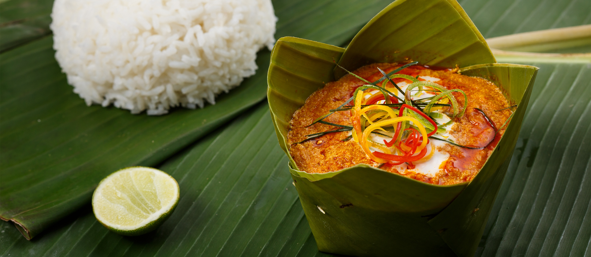
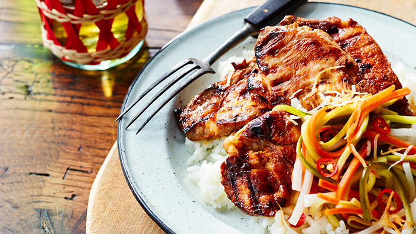
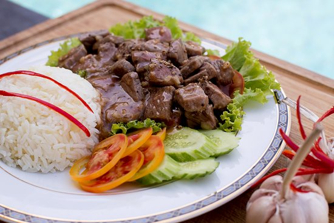

The most poplular khmer foods
-

Fish Amok
Fish Amok is considered the national dish of Cambodia, and for good reason. This dish is a must-try for anyone visiting Cambodia. The dish is made by steaming a white fish fillet, mixed with coconut milk, curry paste, egg, and other spices, in banana leaves. The banana leaves give the dish a unique flavor and aroma. The dish is served with a side of rice and is often garnished with red chili peppers and kaffir lime leaves.
-
Nom Banh Chok
Nom Banh Chok is another Cambodian favorite that you shouldn’t miss. The dish consists of rice noodles topped with a fish-based green curry sauce and fresh vegetables. The dish is usually served with a side of raw vegetables such as cucumbers, string beans, and sprouts. It’s a light and refreshing dish that’s perfect for a hot day.
-

Bai Sach Chrouk
Bai Sach Chrouk is a breakfast dish that’s popular in Cambodia. It consists of grilled pork that’s marinated in coconut milk and garlic, served with rice and a side of pickled vegetables. The dish is simple but flavorful, and the tender pork is a perfect complement to the fragrant rice. -

Beef Lok Lak
Beef Lok Lak is a popular dish in Cambodia that’s made by stir-frying beef with garlic, onions, and soy sauce. The beef is then served on a bed of lettuce with a side of tomato and cucumber slices. The dish is often accompanied by a dipping sauce made from lime juice, salt, and black pepper.